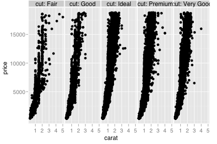
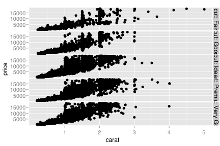
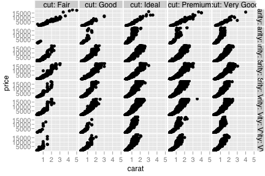
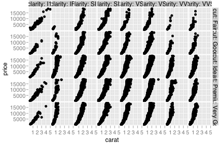
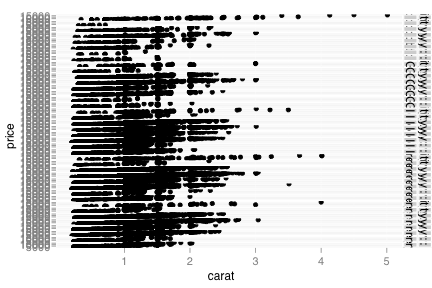

facet_grid
Lay out panels in a rectangular/tabular manner.
Details
Examples
> p <- ggplot(diamonds, aes(x=carat, y=price)) + geom_point() > > # With one variable > p + facet_grid(. ~ cut)  > p + facet_grid(cut ~ .)  > p + facet_grid(cut ~ ., margins=TRUE) > > # With two variables > p + facet_grid(clarity ~ cut)  > p + facet_grid(cut ~ clarity)  > # and only useful if you have a reaaaaaallly long screen > p + facet_grid(cut + clarity ~ .)  > > # You can also use strings, which makes it a little easier > # when writing functions that generate facetting specifications > p + facet_grid("cut ~ .") src "\n"